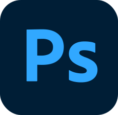
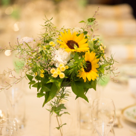
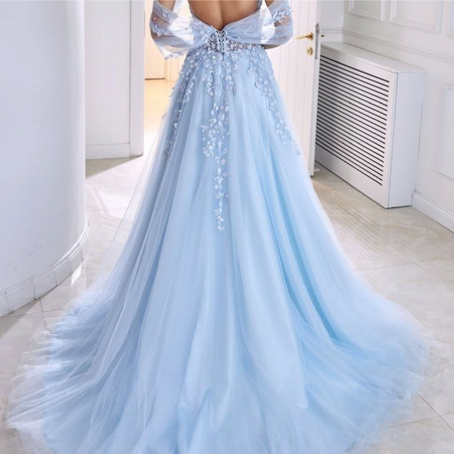
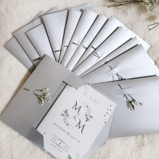
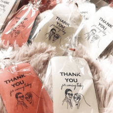

作品タイトル：誕生日ギフト特集
担当：Design / Coding
制作期間：3日間
コメント：主にページ内のボタン作成。他は既存のコードをカスタマイズし、工夫して作成。
My Slogan
Nothing can stop you!
何も君を止められない！
Keep your pace and try your best.
マイペースで自分らしく頑張ろう！
About me自己紹介
プロフィール
◉ 名前：ティンザーピョー
◉ ニックネーム：ピョー
◉ 英名：Thinzar Phyo
◉ 年齢：32歳
◉ 出身地：ミャンマー/マンダレー
◉ 社会人経験（日本）：8年目
◉ 話せる言語：ミャンマー語、日本語、英語
◉ 趣味：旅行、フラワーアレンジ、デザイン制作
◉ 性格：笑顔、前向き、優しい
◉ 好きな食べ物：ラーメン、アイス
経歴
◉〈2011.04〉
母国の外国語大学を日本語専門で卒業
◉〈2012.09〉
地元で日本語の教師、通訳、翻訳として活躍
◉〈2015.11〉
技能実習生受入れ管理団体
《業務内容》ミャンマー人技能実習生の通訳（翻訳）、日本語の教師、生活支援者として活躍
◉〈2018.07〉
ITコンサルティング会社
《業務内容》管理部のアシスタントとして活躍（詳細：勤怠管理、事務所管理、備品管理、サーバー管理、人事業務、請求書作成、翻訳・通訳）
◉〈2020.01〉
フラワーデザイン会社
《業務内容》EC・Design部にて活躍（詳細：オンラインストア担当、受注業務、html /cssコーダー、メールにてお客様対応、ホームページ制作・更新）
◉〈2023.07〉
IT会社
《業務内容》ITエンジニアとして育成中
スキル
◉ html /cssコーディング
◉ ホームページ制作
◉ Adobe Photoshop
◉ Adobe Illustrator
◉ Adobe XD
資格
◉ 日本語能力試験N1
（2018.2 取得)
◉ 給与計算実務能力検定試験２級
（2019.6 取得)
◉ Microsoft Office Specialist Word 2016（2019.9 取得)
◉ Java SE 11 Programmer I
（2023.8 取得)
My Works事例
Website｜ウェブサイト
前職では店舗運営管理システムを利用し、
商品ページ、カテゴリページなどページ作成・更新を
実施いたしました。
2023年4月から大物案件によりブランドページを
立ち上げることになり、
無料ワイヤフレームを参考に
ブランドページ作成に着手できました。
その機会をきっかけにホームページの構造が理解できました。
作品タイトル：ブランドサイト
担当：Design / Coding
制作期間：1ヶ月間
コメント：フリーサイトのワイヤフレームを参考に、Webページ制作を１から作成（初経験）。
作成期間中、分からなかったことがたくさんあり、オンラインで探り探り作成し、
リーダーのデザインイメージ通りのサイトが形になりました。Bootstrapなど新たなスキルも身につけられました。
URL：https://www.belles-fleurs.com/maison/index.html
これまでの制作事例（抜粋）です。
Graphic Design｜グラフィック・デザイン
グラフィック制作の経験がありましたが、プライベートでも趣味として色々なグラフィックの作品を作っています。
具体的に結婚式の招待状、ギフトカード、名刺、お客様へのデザイン提案書、イメージ図などです。
今後はこれまでのデザインスキル以上の作品も作りたいです。
作品タイトル：結婚式招待状
制作期間：1時間
制作ツール：Photoshop, Illustrator, Canva
作品タイトル：ウェルカムボード用写真
制作期間：30分
制作ツール：Photoshop, Illustrator
作品タイトル：Designイメージ図
制作期間：45分
制作ツール：Photoshop, Illustrator
Webデザインやグラッフィックは以下のツールを使って作成しています。
デザインアイディアや素材はPinterestやCanvaをはじめ、Pixels・写真ACからダウンロードしてインスパイア。。。
Website制作にはCodePenでhtml/css/javascriptのコードを参考に、オリジナルデザイン作成。。。
Skills & Tools

html/css歴：3年
Java script/jQuery歴：6ヶ月
勉強方法：スクール授業、個人で操作を取得。
htmlでコンテンツ内容を記述し、cssでデザインするコードを覚えて実務にも活用しています。レスポンシブ対応のページを作成することができます。ページに動きを出したい時、Java scriptとjQueryで記述しています。Webページ制作、更新時に主に使用しています。

Photoshop歴：3年
勉強方法：スクール授業、個人やadobeで配信されている無料動画で操作を取得。
デザインの勉強を兼ねて商品の画像を加工したり、バナー・Webサイトの模写を作成しています。画像加工やアイコン作成に主にPhotoshopを使用しています。
Illustrator歴：3年
勉強方法：スクール授業、個人やadobeで配信されている無料動画で操作を取得。
Photoshopと併用でバナー・Webサイトの模写を作成したり、招待状やハガキなどグラフィックデザインを作成しています。デザインカンプは主にIllustratorを使用しています。
Adobe XD歴：6ヶ月
勉強方法：Udemyのコース、個人で操作を取得。
ホームページ用のUI・モックアップ作成時に使っています。
In the Future将来的に..
将来的には姉妹2人のウェディング系のワンストップ・サービスの事業を創立したいと考えております。
会社名：『Yes, we Do！』。なんでもやる、なんでもサービスするというのがパーポスです。
以下のサービスをメインに提供し、お客様の満足度が高めるようベストを心づけてまいります。
オンラインサービスもできるようにホームページ作成したり、必要なスキルをどんどん身につけて取り組んでまいります。

Flower Decorationフラワー装飾
ウェディングのイメージに合わせて会場装飾、ウェッディングブーケ、ブートニアなどサービスいたします。

Wedding Dressウェディングドレス
ご要望を伺ってウェディングドレスのデザインをご提案いたします。

Invitation Card招待状の作成
招待状は多言語でお作りいただけます。ご希望に応じたデザインを提案し、オリジナルデザインでお作りいたします。

Thanks Giftお引出物
ご希望と予算をお聞きし、予算内の品物をご提案いたします。